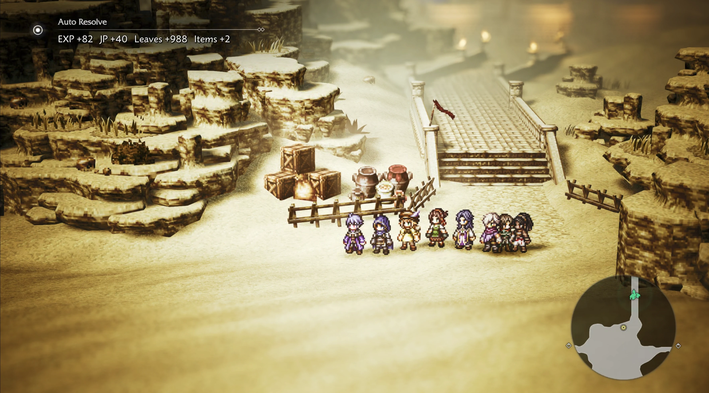

Overview
This mod only applies to ordinary random encounters triggered while walking on the map. Once the level threshold is met, it skips the battle transition and awards the enemy group's base rewards. Boss, story, fixed and event encounters remain normal battles; encounters that cannot be confirmed are not resolved automatically.

Awards EXP, JP, and leaves, including verified native support, equipment, village and training rewards.
Adds drops within native inventory limits; only item quantity is truncated when a stack is full.
F6 toggles and saves the enabled state. Notifications follow the game's interface language.
Preserves native rare and first-group selection. Active meals, quest-specific drops and unconfirmed encounters retain normal combat.
Eligibility
An ordinary random encounter is skipped only when the highest active-party level meets the enemy-group and area thresholds:
The default is LevelMargin=1. Encounters outside the ordinary random-encounter path still use native battles, even when the level condition is met.
- Living active members and the native training roster receive verified rewards. Knocked-out active members receive no EXP or JP.
- Active and training characters recover HP/SP only after actually levelling up.
- Uses the verified native reward interfaces and training roster. See the runtime validation record for tested coverage.
Installation
Targets Windows Steam AppID 3014320, build 22012444. Install official UE4SS experimental separately; verified archive: UE4SS_v3.0.1-1181-g83330635.zip.
- Download and extract the source ZIP. With Python 3, Clang, LLVM dlltool and lld-link available, build the package from the source directory:
See build requirements and checks.python3 tools/package.py - Exit the game. Extract
dist/OT0AutoResolve-0.1.0.zipand copy itsOT0AutoResolvefolder into:Octopath_Traveler0\Binaries\Win64\ue4ss\Mods\ - Keep
enabled.txt. If your loader usesue4ss/Mods/mods.txt, enableOT0AutoResolve : 1while preserving other entries. - Enter an ordinary field map; F6 toggles auto-resolve.
The repository ZIP contains source, not a prebuilt native DLL. Build the mod package before installation. Preserve existing loader settings and other mods.
Settings
The configuration file is ue4ss\Mods\OT0AutoResolve\config.ini. Restart the game after editing it.
[General]
Enabled=1
LevelMargin=1
ShowUI=1Enabled1enables and0disables the mod; the hotkey saves this value.LevelMargin- Level difference from 0–99, default 1; set to 0 to resolve at an equal level.
ShowUI1shows reward notifications;0hides them.
Upgrade and uninstall
Upgrade
Exit the game, then replace only the OT0AutoResolve\Scripts folder, including its native DLL. Keep the existing config.ini and other mods.
Uninstall
Exit the game, delete the ue4ss\Mods\OT0AutoResolve folder, and remove its line from ue4ss\Mods\mods.txt. Keep shared loader files if other mods still use UE4SS.
Troubleshooting
What if F6 does nothing?
Check UE4SS startup, enabled.txt or the existing mods.txt entry, and that Scripts/ot0_native.dll was built and installed. F6 is fixed; restart the game after manual configuration changes.
Why do ordinary enemies still start a battle?
Check that the party meets the current level threshold and that the encounter was triggered by walking on the map. Boss, story, fixed event, event and unconfirmed encounters always remain normal battles.
Where can I find logs if rewards look wrong?
The mod does not save the game. If an interface is unavailable, the normal battle proceeds; a reward-write error stops further automatic resolution. Check the game's Win64/ue4ss/Mods/OT0AutoResolve/OT0AutoResolve.log.